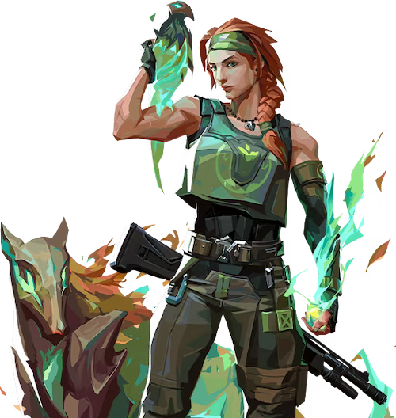

ヘイブンのマップ
情報・特徴
ヘイブンは他のマップと異なり、3つのプラントサイト（Aサイト、Bサイト、Cサイト）を持つユニークなマップです。この特徴により、攻守双方で迅速な判断と柔軟な戦術が求められます。
また、ヘイブンは広範なエリアと狭い通路が混在しており、さまざまな射程での交戦が発生します。特にガレージやミッドエリアでは激しい戦闘が頻繁に起こります。
全体マップ・マップの詳細
ヘイブンのおすすめ構成
ヘイブンでは、広範なエリアをカバーできるエージェントや迅速にローテーションできるエージェントが重要です。「ジェット」や「オーメン」などの機動力のあるキャラが特に有用です。また、「サイファー」や「キルジョイ」などのエリアコントロール能力を持つエージェントも効果的です。
| おすすめチーム構成 | ||||
|---|---|---|---|---|
 ジェット |
 オーメン |
 キルジョイ |
 スカイ |
 ソーヴァ |
ヘイブンの基本的な攻め方
Aサイト側の立ち回り
ヘイブンのAサイトを攻める際は、AロングとAショートを迅速に制圧することが重要です。スモークやフラッシュを使用してクリアリングを行い、安全にサイトに侵入します。また、Aヘヴンの制圧も攻撃の鍵となります。
Bサイト側の立ち回り
ヘイブンのBサイトを攻める際は、ミッドからの侵攻が効果的です。Bサイトは他のサイトに比べて防衛が難しいため、迅速なエントリーが求められます。スモークやフラッシュを使用してクリアリングを行い、安全にサイトに侵入します。
Cサイト側の立ち回り
ヘイブンのCサイトを攻める際は、Cロングとガレージを制圧することが重要です。特にCロングは長距離の射線が通るため、スナイパーライフルが有効です。スモークやフラッシュを使用してクリアリングを行い、安全にサイトに侵入します。
ヘイブンの基本的な守り方

Aサイト側の立ち回り
Aサイトを守る際は、AロングとAショートを抑えることが重要です。Aヘヴンからの射線を活用し、敵の侵攻を防ぎます。
Bサイト側の立ち回り
Bサイトを守る際は、ミッドとガレージからの侵攻を警戒します。迅速にローテーションし、必要に応じて他のサイトを支援します。
Cサイト側の立ち回り
Cサイトを守る際は、Cロングとガレージを抑えることが重要です。Cサイトは広範なエリアをカバーする必要があるため、適切なポジショニングと迅速なローテーションが求められます。